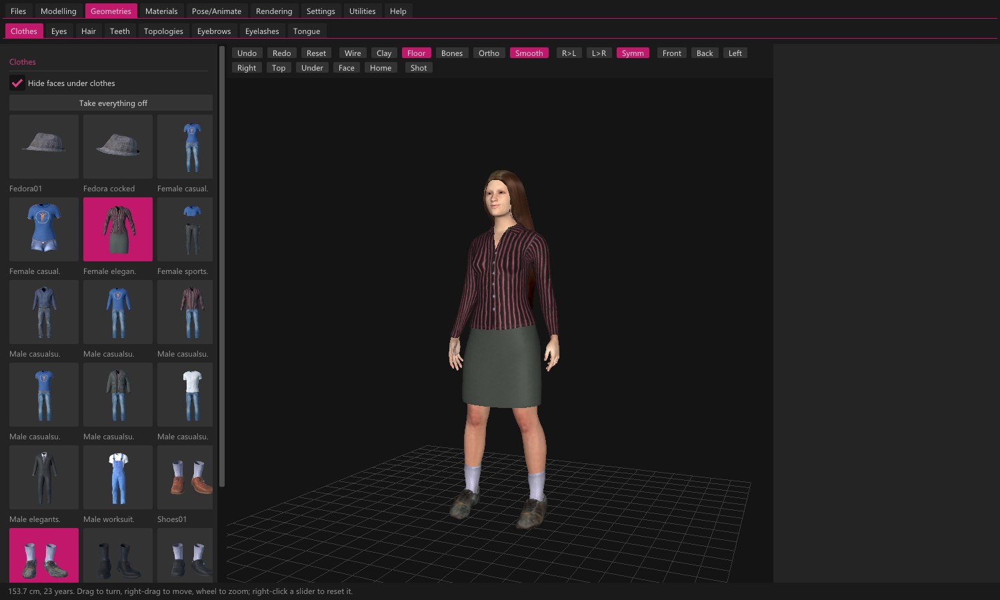
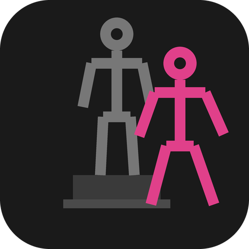

Words to a person
Type a tall, muscular old woman with a big nose in Utilities > Describe and the sliders move to match. Then dress her, pose her and export her with her skeleton to any 3D app.

People in 3D with sliders, on your own PC. MakeHuman, remade in C++. Part of Atelier.

Type a tall, muscular old woman with a big nose in Utilities > Describe and the sliders move to match. Then dress her, pose her and export her with her skeleton to any 3D app.